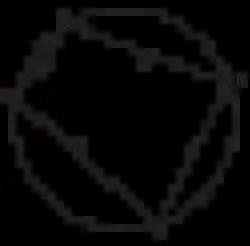
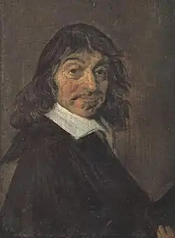
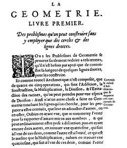
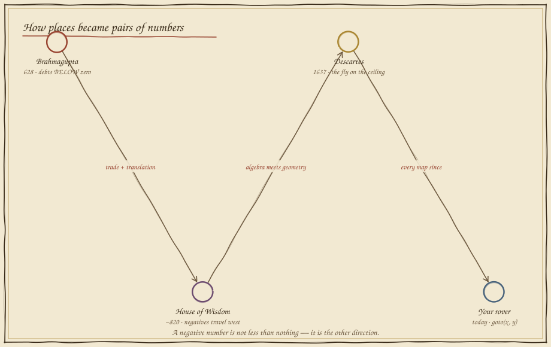
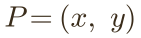

The Robot's Map
In which a delivery rover cannot reach a dock that sits behind it, and an Indian astronomer's rules for debts turn out to be directions.
The dock behind you
Your rover starts at the warehouse door. The dock needs a delivery — it's marked on the grid. You command the rover with steps east and steps north, and steps are counts: 0, 1, 2, 3… Numbers don't come smaller than nothing. Deliver the parcel.
Every east step walks away from a west dock. You can reach the north just fine — but the entire western half of the world is simply unaddressable in counting numbers. The rover isn't broken; its number system is. What's missing is a number that means "one step the other way."
Debts, fortunes, and a fly on the ceiling
Negative numbers were not discovered by mathematicians looking at number lines. They were invented by people balancing books — and made into geography by a man watching a fly.




A number with a direction inside it
Brahmagupta's move: stop treating "less than nothing" as nonsense and treat it as the other way. The road below runs through zero — home. East of home is fortune; west of home is debt. Drag the rover anywhere and read its position.

Now dispatch anywhere
Same rover, same two sliders — but now they run through zero. West is merely negative east; south is negative north. Docks appear in every quadrant. Set the signed pair, dispatch, deliver.
Watch the rover's path: it walks the x-leg first, then the y-leg — and when x is negative the arrow simply points the other way. No new machinery was added to the robot. The numbers grew a direction, and the unaddressable half of the world quietly joined the map.
What you can now build
Every waypoint a drone has ever flown, every pixel on this screen, every "go to (x, y)" in every robot program on Earth is Descartes' fly with Brahmagupta's signs. And a question is now pending: the dispatcher walks two legs of a triangle to reach the dock — how long would the straight flight be? Folio 04 has been waiting two and a half thousand years to answer.
Field exercise: pick a corner of your room as home. Every object becomes a signed pair — the chair at (+3, −2) paces, the door at (−4, +1). Notice you never needed the words "left" or "behind": the signs carried them. That is why robots don't get confused; language turns, numbers don't.
continue to folio 03 — the unknown return to the codex map